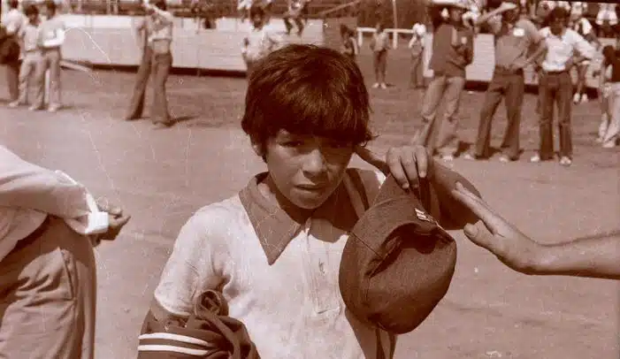

HISTORIA DE UN ICONICO POPULAR
Diego Armando Maradona nació el 30 de octubre de 1960 en Villa Fiorito, un barrio humilde de Buenos Aires. Desde pequeño mostró una pasión desbordante por la pelota, que se convirtió en su compañera inseparable y en el símbolo de sus sueños. Desde muy chico vivió de cerca las dificultades económicas, pero también el fuerte sentido de unión familiar que marcaría toda su vida. La infancia de Diego estuvo atravesada por las características típicas de muchos barrios populares de Argentina en esa época: calles de tierra, casas precarias y la necesidad de compartir todo . Sin embargo, también fue un entorno donde el juego, la amistad y la pasión por el futbol eran gran parte de la vida cotidiana Más allá del deporte, Maradona fue una figura profundamente humana, con virtudes y contradicciones que lo hicieron cercano al pueblo. Su personalidad intensa, su carisma y su manera de hablar sin filtros lo convirtieron en un ídolo popular que trascendió fronteras. Para muchos, representó la voz de quienes no tenían voz, un símbolo de rebeldía y orgullo argentino. Su vida estuvo llena de momentos de gloria y también de desafíos personales. Maradona vivió con intensidad cada etapa, dejando huella no solo en las canchas, sino también en la cultura y en la memoria colectiva. Fue amado, criticado, venerado y discutido, pero nunca ignorado. Su figura se transformó en mito, y aún hoy continúa inspirando canciones, murales, películas y homenajes en todo el mundo. Diego fue más que un jugador: fue un fenómeno social, un personaje que encarnó la pasión, la contradicción y la magia de un país entero. Su historia es la de un chico que salió de un barrio humilde y se convirtió en leyenda, llevando consigo la esencia de la Argentina y el corazón de millones de personas. Falleció el 25 de Noviembre de 2020, a los 60 años, en su casa de Tigre. Su muerte genero una conmoción mundial y una despedida multitudinaria en la casa rosada donde miles de personas se acercaron para darle el ultimo adiós .
